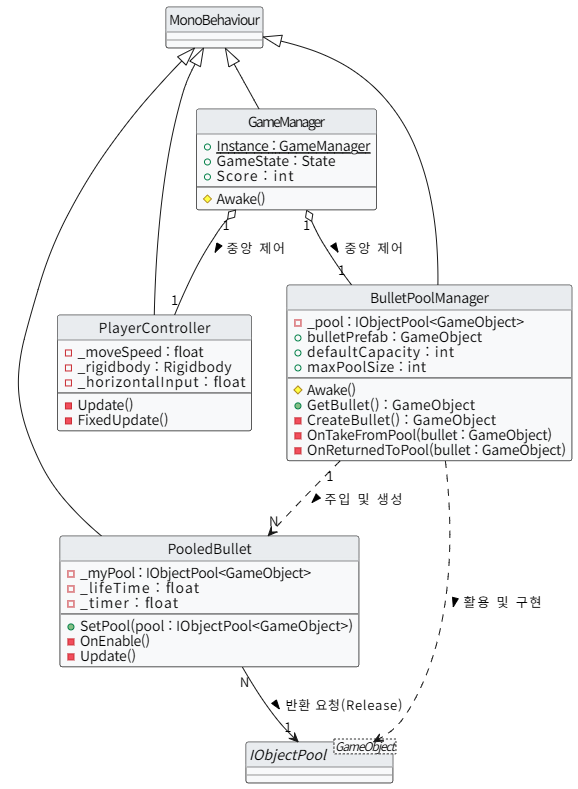
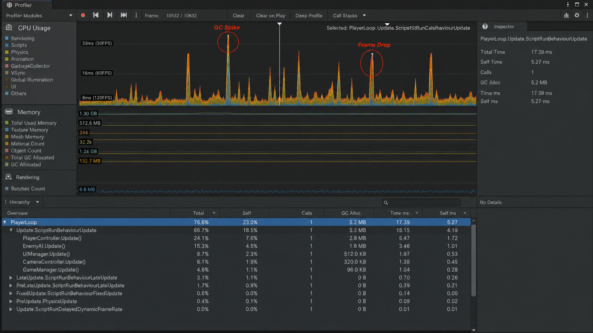
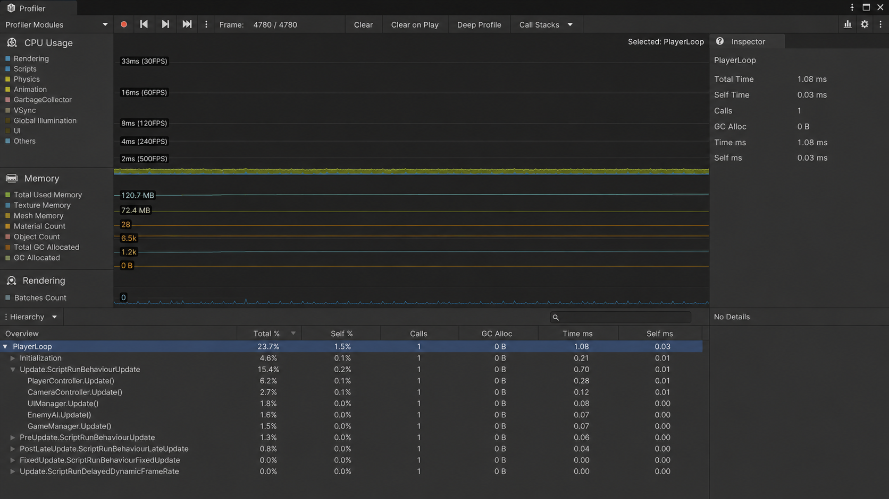

1. 프로젝트 개요
탄막 액션 로그라이크 장르에 무협 세계관의 무공(스킬) 성장 시스템을 결합한 1인 인디 게임 개발 프로젝트입니다. Unity 엔진과 C# 환경에서 객체지향 컴포넌트 설계, 데이터 구조화, 그리고 대규모 엔티티 환경의 런타임 최적화를 스크립팅 레이어에서 직접 구현하고 있습니다. 최종적으로 Steam 플랫폼 단독 출시를 목표로 빌드 파이프라인을 구축 중입니다.
2. 시스템 설계 및 핵심 구현
게임 오브젝트 간 결합도를 낮추고 데이터 접근 오버헤드를 줄이기 위해, Unity 생명주기와 컴포넌트 패턴을 기반으로 아키텍처를 설계했습니다.
- Runtime Loop Separation — Update / FixedUpdate: 가변 프레임 환경에서 입력 검증(
Update)과 물리 연산(FixedUpdate)을 계층 분리하고, 프레임 유실에 따른 연산 오류 방지를 위해 Time.deltaTime 보정 아키텍처를 수립했습니다.
- Generic Singleton — GameManager<T> + DontDestroyOnLoad: 씬(Scene) 전환 시 자원 파괴를 방지하기 위해 제네릭 기반 싱글톤(
GameManager<T>)을 구현했습니다. DontDestroyOnLoad를 통해 씬 간 상태 유지를 보장하며, 중복 인스턴스 생성을 방어 코드로 차단했습니다.
- Object Pool — ObjectPoolManager<T> + IPoolable Interface:
UnityEngine.Pool.IObjectPool<T>를 래핑한 ObjectPoolManager<T>를 구축하고, Pool 반환 책임을 각 엔티티(IPoolable)에 위임하는 구조로 설계하여 Pool과 Entity 간 결합도를 최소화했습니다.
- Skill Data Table — ScriptableObject 기반 무공 자료구조:
ScriptableObject를 테이블 단위로 정의하여 무공(스킬)의 등급, 확률 가중치, 스텟 증가량을 데이터 레이어에서 분리했습니다. 런타임에서는 테이블을 참조하여 무작위 강화 선택 및 확률 제어 로직을 계산합니다.

▲ UnityEngine.Pool 기반의 오브젝트 풀링 아키텍처 및 컴포넌트 의존성 다이어그램
3. 기술적 도전 과제 및 트러블슈팅 (Troubleshooting)
이슈: 대량 엔티티 동시 스폰 시 CPU 병목 및 프레임 드랍 현상
[원인 분석] 서바이버 장르 특성상 몬스터 300개 + 투사체 500개 이상이 실시간으로 화면에 등장합니다. 초기 설계에서 Instantiate() / Destroy()를 무분별하게 호출한 결과, C# 매니지드 힙(Heap) 할당 비용이 급증하고, Update 루프 내에서만 5.2 MB의 GC Alloc이 지속 발생했습니다. 빈번한 가비지 컬렉터(GC) 구동으로 메인 스레드가 순간 멈추는 GC Spike 현상이 Unity Profiler에서 계측되었습니다.
[해결 방안 및 성과]
런타임 가비지 생성 자체를 억제하기 위해 UnityEngine.Pool.IObjectPool<T> 표준 기반의 오브젝트 풀링 아키텍처를 구축했습니다. 초기화 시점에 필요 최소 수량의 엔티티 레퍼런스를 메모리에 캐싱하여 Pool에 격리한 뒤, 런타임 스폰 요청 시 SetActive(true/false) 인터페이스로 재사용하는 구조로 리팩토링했습니다. 결과적으로 런타임 인스턴스 생성 비용을 제로에 수렴시키고, GC Alloc 0 B를 프로파일러 데이터로 증명했습니다.
📊 PROFILER BENCHMARK 결과 비교

[Before] Instantiate / Destroy 루프 가동: 무분별한 객체 생성/파괴 호출로 인해 CPU Usage 그래프가 30FPS 선 위로 날카롭게 솟구치는 GC Spike 현상이 관측됩니다. 하단의 Hierarchy를 보면 Update 루프 내에서만 무려 5.2 MB에 달하는 런타임 가비지 메모리(GC Alloc)가 지속해서 생성되며 스레드 병목 및 불안정한 프레임 드랍을 유발하고 있습니다.

[After] IObjectPool 아키텍처 적용 후: 동일한 개수의 엔티티가 스폰되는 환경임에도 불구하고, 자원 재사용 구조가 완전 안착되어 CPU Usage 그래프가 120FPS 하단에서 매우 안정적이고 평평하게(Flatline) 유지됩니다. 실시간 가비지 할당량(GC Alloc) 역시 0 B로 완벽하게 제어되었음을 증명합니다.
4. 향후 아키텍처 고도화 계획
클라이언트 내부에 격리된 플레이 데이터의 정합성 검증 및 위변조 방지를 위해 아래 백엔드 레이어를 순차적으로 구축할 예정입니다.
- REST API: Spring Boot 기반 리더보드 서버 구축. 클라이언트에서 점수 제출 시 HMAC 서명 검증으로 위변조를 방지하는 보안 레이어 설계.
- AUTH: JWT 기반 인증 레이어 도입. Access Token + Refresh Token 이중 구조로 세션 관리.
- CACHE: 리더보드 조회 성능 최적화를 위해 Redis Sorted Set 구조 도입 검토. RDBMS 조회 부하를 캐시 레이어에서 흡수하는 구조 설계.
- UNITY: 현재 MonoBehaviour 기반 아키텍처에서 DOTS(Data-Oriented Tech Stack) / ECS 구조로의 점진적 마이그레이션 검토. Addressables를 활용한 에셋 메모리 관리 최적화 적용 예정.